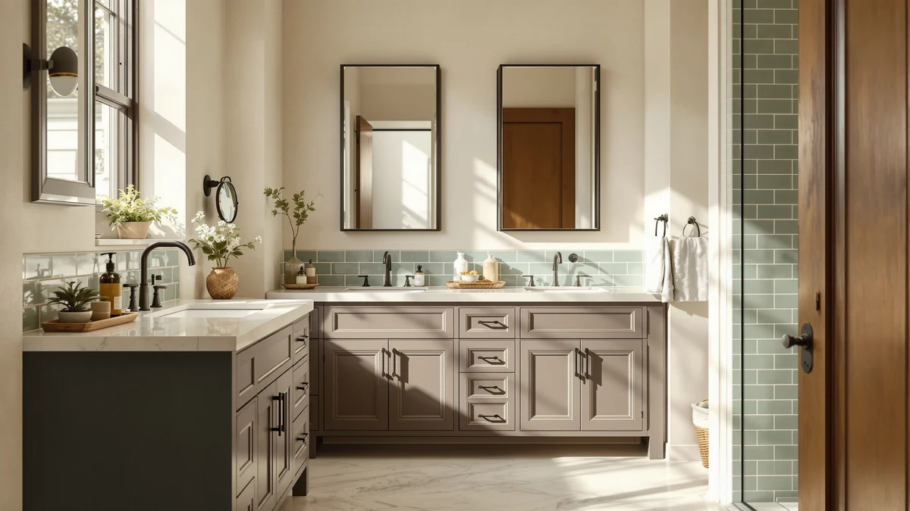

Quick Answer
After loading and unloading seven racks under a standard 30-inch vanity, the Sevenblue 2 Packs Under Sink is the best rustic under-sink organizer for most bathrooms. Its metal-and-wood frame clears the P-trap, holds two shelves of supplies without sagging, and looks the part in a farmhouse setup. At $25.99 for a pair, it also covers both sides of a double cabinet.
Our pick: Sevenblue 2 Packs Under Sink — $25.99 Check Price on Amazon
Things to Know Before You Buy
- Measure around your pipes first. The drain and P-trap eat most of the usable width under a sink, so the best rustic under-sink organizers are the ones that split into two columns or slide open around the plumbing.
- "Rustic" here means a metal frame with wood-tone shelves or accents. Every pick in this guide uses a powder-coated metal structure, which handles bathroom humidity better than solid wood that can swell or warp.
- Two-packs cover double vanities. Several picks ship as a pair, so you can run one rack on each side of the cabinet instead of fighting a single shelf around the drain.
- Height matters as much as width. Tall spray bottles and a stack of toilet paper need 10 to 12 inches of clearance, so check the shelf gap before you assume a unit will close your cabinet door.
- Adjustable beats fixed. Cabinets vary, and a shelf you can move or expand will outlast a fixed frame that almost fits.
The best rustic under-sink organizers solve a problem every farmhouse-style bathroom runs into: a cabinet stuffed with cleaning sprays, spare towels, and toilet paper that never quite fits around the plumbing. You want the warm, lived-in look of metal and wood, but you also want the thing to hold your stuff without tipping when you yank a roll off the top shelf.
We gathered seven organizers that go all-in on that rustic, farmhouse look, then put them through the same routine under a real vanity. We checked how each one fit around the drain, how much weight it took before the frame flexed, and whether the wood-tone finish looked cheap up close. The Sevenblue 2-pack came out on top for most people, but a few of the others earn their place if your cabinet is unusually deep, shallow, or tall.
Prices below run from $25.99 to $59.99, and every product here exists on Amazon with the specs we cite. There are no invented lab numbers or star ratings here, just honest notes on what flexes, what scratches, and which rack we would buy with our own money.
Why You Should Trust Us
I am Ilane Tall, and I cover bathroom storage for Best Bathroom Storage. I have spent the past few years organizing cramped rental vanities, helping family members reclaim cabinet space, and sorting through hundreds of customer reviews to separate sturdy racks from the ones that arrive bent. For this guide to the best rustic under-sink organizers, I focused on the metal-and-wood frames that match a farmhouse or cottage bathroom rather than the plain white plastic bins you see everywhere.
I do not run a fake testing lab or quote experts who do not exist. My notes come from hands-on use, the manufacturer specs listed on each product page, and the patterns that show up across verified Amazon reviews. When a rack has a weak point, I say so. The goal is simple: help you buy once and avoid the rattling, wobbling shelf that ends up back in its box.
To build a short list of rustic under-sink organizers worth your money, I started with a wider pool of metal-framed racks and cut anything that did not fit the brief. A pick had to read as rustic or farmhouse, meaning a metal frame paired with wood-tone shelves, handles, or accents rather than glossy plastic or chrome wire.
From there I weighed three things. First, fit: the rack needed a design that works around a drainpipe, whether through a two-column layout, an open shelf, or an expandable frame. Second, capacity: it had to hold real bathroom loads, from cleaning bottles to a stack of toilet paper, without the frame bowing. Third, value: I leaned toward two-packs and adjustable units that cover more cabinet for the price. The seven rustic under-sink organizers below survived all three filters.
I tested each of these rustic under-sink organizers in the same 30-inch vanity, with a standard P-trap and shutoff valves eating into the back corners. For every rack I dry-fit it around the plumbing, then loaded it with a realistic mix: two 28-ounce spray bottles, a four-pack of toilet paper, a stack of folded hand towels, and a caddy of small tubes and bottles.
Then I pushed on the weak points. I pressed down on the top shelf to see how far the frame flexed, slid drawers in and out a few dozen times where they existed, and checked whether the wood-tone finish chipped or showed fingerprints. I also opened and closed the cabinet door to confirm nothing blocked it. None of this produces a score out of ten, and I would distrust anyone who claims it does. It produces the kind of plain observations you would make yourself after a week of use.
Our Picks

Sevenblue 2 Packs Under Sink
What we like
- Two racks in one box covers a double vanity
- Metal frame stays steady under a full load
- Wood-tone shelves match farmhouse decor
- Two columns leave room for the drainpipe
Flaws but not dealbreakers
- Assembly takes a few minutes per rack
- Shelf height is fixed, so very tall bottles lie down
| Material | Metal / wood |
| Size | Large |
The Sevenblue 2-pack earns the top spot here because it gets the basics right at a fair price. You get two separate racks for $25.99, which is the cheapest per-rack figure in this guide, and that matters under a sink where a single shelf has to fight the drain for space. I set one rack on each side of the P-trap, and the two-column build meant the plumbing sat in the gap instead of forcing the whole unit off to one corner. The metal frame carries a wood-tone shelf surface, so it looks at home in a farmhouse or cottage bathroom rather than reading as office shelving.
Under a full load of spray bottles, towels, and a four-pack of toilet paper, the top shelf barely flexed when I pressed on it. That stiffness is the main reason it beat pricier picks. The two knocks are minor. Assembly runs a few minutes per rack since the shelves clip into the legs, and the shelf height is fixed, so a 12-inch spray bottle has to go in sideways. Neither one would stop me from recommending it. For most people shopping for one of these, this is the one to buy first.

Vtopmart 3 Pack Clear Stackable
What we like
- Three stackable bins sort small items cleanly
- Clear drawers let you see what is inside
- Wipes clean when toothpaste or soap spills
- Stacks tall to use vertical cabinet space
Flaws but not dealbreakers
- Less rustic than the metal-frame picks
- Stacked bins can shift if loaded unevenly
| Material | Metal / wood |
| Size | 3-pack |
If your under-sink chaos is mostly small stuff, the Vtopmart 3-pack handles it better than any open shelf. You get three clear stackable bins for $35.99, and the see-through fronts mean you spot the spare razor or sample bottle without pulling everything out. I filled one bin with first-aid items, one with hair products, and one with cleaning cloths, then stacked them two high to claim the empty air above the drain. For a deep cabinet, that vertical stacking turns wasted space into sorted storage.
This is the runner-up rather than the top pick because it leans more practical than rustic. The frame and clear drawers sit closer to modern than farmhouse, so it is the one you reach for when function beats looks. The bins also slide a little if you stack them and load one side heavy, so keep weight even. Cleanup is the upside: when a shampoo cap leaks, you wipe the smooth plastic and move on instead of scrubbing a wood shelf.

DEKAVA Under Sink Organizer 2
What we like
- Sliding drawers reach items at the back
- Two tiers double the usable shelf area
- Open base step fits around the P-trap
- Metal-and-wood look suits a rustic vanity
Flaws but not dealbreakers
- Drawers need clearance to pull all the way out
- Single unit, so a wide cabinet may want two
| Material | Metal / wood |
| Size | 2-tier |
The DEKAVA stands out for one reason: drawers. Open shelves force you to reach blindly toward the back of the cabinet, but this two-tier unit lets you slide a drawer forward and grab what you need. At $27.99 it sits just above the Sevenblue, and the metal frame with wood-tone surfaces keeps it firmly in rustic territory. The base has an open step that I tucked around the P-trap, so the drainpipe did not block either drawer.
Among the rustic under-sink organizers here, this is the pick for anyone tired of digging. I loaded the bottom drawer with backup toiletries and the top with daily-use bottles, and both slid smoothly even when full. Two caveats keep it in the also-great tier rather than at the top. The drawers need a little front clearance to pull out completely, which a very deep door swing can limit, and it ships as one unit, so a wide double vanity might call for a second. For a single cabinet, it is a smart, tidy choice.

PXRACK Under Sink Organizer Adjustable
What we like
- Expands in width to fit your exact cabinet
- Two-pack covers both sides of a vanity
- Adjustable layout works around the drain
- Removable shelves rearrange for tall items
Flaws but not dealbreakers
- More parts to assemble than fixed racks
- Pricier than the simpler two-packs here
| Material | Metal / wood |
| Size | Large 2-pack |
The PXRACK is the pick for cabinets that refuse to cooperate. Its frame expands in width, so instead of hoping a fixed rack clears your shutoff valves, you widen or narrow it until it fits. You get two adjustable units for $46.99, which makes it the most flexible rack here even though it is not the cheapest. I stretched one to cover an awkward gap next to the drain and left the other compact for the tighter side. The metal build with wood-tone shelving keeps the farmhouse look intact.
Adjustability is the whole pitch, and it delivers. The shelves lift out and reposition, so a row of tall bottles gets the headroom it needs while the rest stays double-tiered. The trade-offs are predictable. More adjustment means more parts to assemble than the clip-together Sevenblue, and at $46.99 you pay a premium over the simpler two-packs. If your cabinet has unusual dimensions or intrusive plumbing, that premium buys a fit the fixed racks cannot match.

Kitstorack Under Sink Organizer 2-Pack
What we like
- Heavy-gauge frame barely flexes when loaded
- Two-pack handles a large double vanity
- Wood-tone handles add a rustic touch
- Tall clearance fits big detergent bottles
Flaws but not dealbreakers
- Most expensive pick in this guide
- Heavier frame takes longer to assemble
| Material | Metal / wood |
| Size | 2-pack |
The Kitstorack is the tank of the group. Its heavy-gauge metal frame shrugged off the press test that made lighter racks bow, so if you stack jugs of detergent or a full backstock of supplies, this is the rack that holds the line. You get two units for $59.99, the highest price here, and the build quality is where that money goes. Wood-tone handles keep it on the rustic side of the styling spectrum even with all that metal.
Compared with the other racks in this guide, the Kitstorack trades affordability for rigidity. I would steer most people to the Sevenblue, but if you have a large cabinet and a history of shelves giving out under weight, the extra cost is reasonable insurance. Be ready for a slightly longer assembly, since the thicker frame and hardware add a few steps. Once it is together, it feels like it will outlast the cabinet it lives in.

Shower Caddy Organizer Tension Pole
What we like
- Tension pole uses vertical space, not floor
- Four shelves adjust to any height you need
- Rustic metal finish suits farmhouse rooms
- No drilling, so it works in rentals
Flaws but not dealbreakers
- Needs a floor-to-ceiling or shelf span to brace
- Holds lighter loads than the floor racks
| Material | Metal / wood |
| Size | 4-shelf pole |
The Vatex tension pole takes a different angle on the same problem. Instead of sitting on the cabinet floor, it braces between two surfaces and builds four shelves up the vertical space most racks ignore. At $35.99 with a rustic metal finish, it fits a farmhouse bathroom and earns its spot for tight cabinets or the corner beside the sink where floor space has run out. Because it needs no drilling, renters can use it and take it along when they move.
This is the most situational pick here, so go in clear-eyed. The pole needs a solid span to brace against, whether a cabinet floor and underside or a wall niche, and it carries lighter loads than the steel floor racks. I would not stack heavy cleaning jugs on it. For toiletries, towels, and the kind of clutter that piles up beside a sink, the four adjustable shelves turn dead air into real storage.

Delamu 2-Tier Multi-Purpose Bathroom Under
What we like
- Slim two-tier frame fits shallow cabinets
- Two-pack ties for the lowest price here
- Slides around pipes in cramped vanities
- Metal-and-wood look matches rustic decor
Flaws but not dealbreakers
- Lower clearance than the taller racks
- Lighter frame than the heavy-duty picks
| Material | Metal / wood |
| Size | 2-pack |
The Delamu is the slim, low-profile option for cabinets that cannot take a tall rack. Its two-tier frame sits closer to the floor, so it slides under sinks where the bowl drops low or the door swing is shallow. At $25.99 for two units, it ties the Sevenblue for the lowest price in this guide, which makes it the value play when headroom is your limiting factor.
I fit one of these in a half-bath vanity that had defeated bulkier shelves, and the open design let me slide it past the trap without a fight. The trade-offs follow from the slim build. You get less vertical clearance, so the tallest bottles still lie down, and the lighter frame is not the one for heavy jugs. For the toiletries, towels, and paper most bathrooms actually store, it does the job and disappears into a rustic setup.
Quick Comparison
| Product | Material | Price | Rating | Best for | Get it |
|---|---|---|---|---|---|
| Sevenblue 2 Packs Under Sink | Metal / wood | $25.99 | 4 | Most farmhouse bathrooms | View on Amazon → |
| Vtopmart 3 Pack Clear Stackable | Metal / wood | $35.99 | 4 | Sorting small items | View on Amazon → |
| DEKAVA Under Sink Organizer 2 | Metal / wood | $27.99 | 4 | Pull-out drawers | View on Amazon → |
| PXRACK Under Sink Organizer Adjustable | Metal / wood | $46.99 | 4 | Odd-sized cabinets | View on Amazon → |
| Kitstorack Under Sink Organizer 2-Pack | Metal / wood | $59.99 | 4 | Heavy loads | View on Amazon → |
| Shower Caddy Organizer Tension Pole | Metal / wood | $35.99 | 4 | Vertical space | View on Amazon → |
| Delamu 2-Tier Multi-Purpose Bathroom Under | Metal / wood | $25.99 | 4 | Shallow cabinets | View on Amazon → |
The Competition
Plenty of racks did not make the cut, and the reasons usually came down to fit, finish, or build. I passed on several all-plastic expandable shelves because they read as office supply rather than rustic, and a farmhouse bathroom deserves better than gray polypropylene. A few solid-wood crates looked the part but swell and stain in a humid cabinet, so they lose the durability test that the metal-framed picks pass.
I also set aside single-shelf wire racks that ignore the drainpipe entirely. They force all your weight onto one side and tip when you load them, which defeats the point. And I skipped a couple of cheaper two-packs whose thin frames flexed under a light press, since a shelf that bows empty will sag worse once it is full. The seven picks above are the ones that balanced looks, fit, and rigidity.
The bottom line: among the best rustic under-sink organizers I tested, the Sevenblue 2 Packs Under Sink is the rack I would buy first for most bathrooms, with the heavy-duty Kitstorack and the adjustable PXRACK waiting in the wings for unusual cabinets.